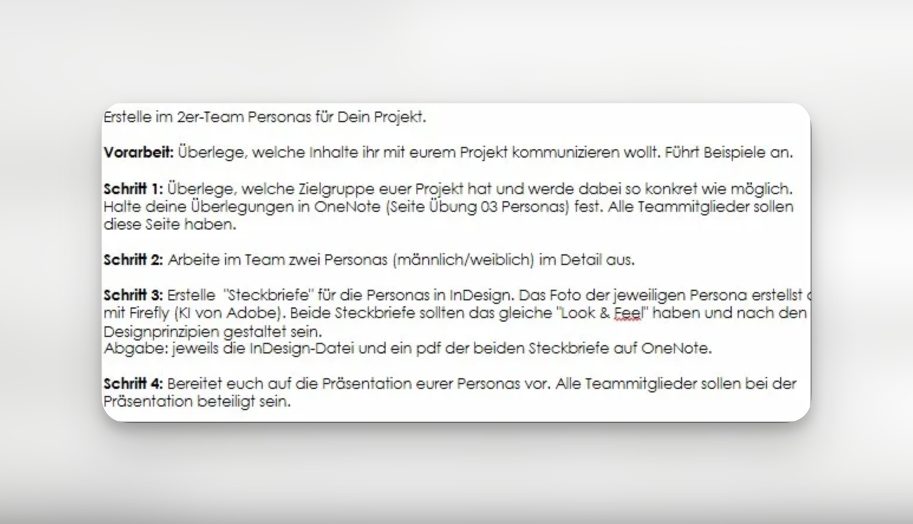
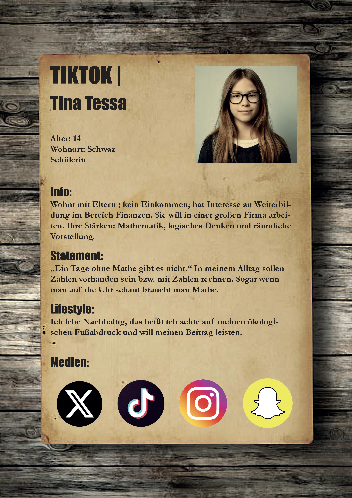
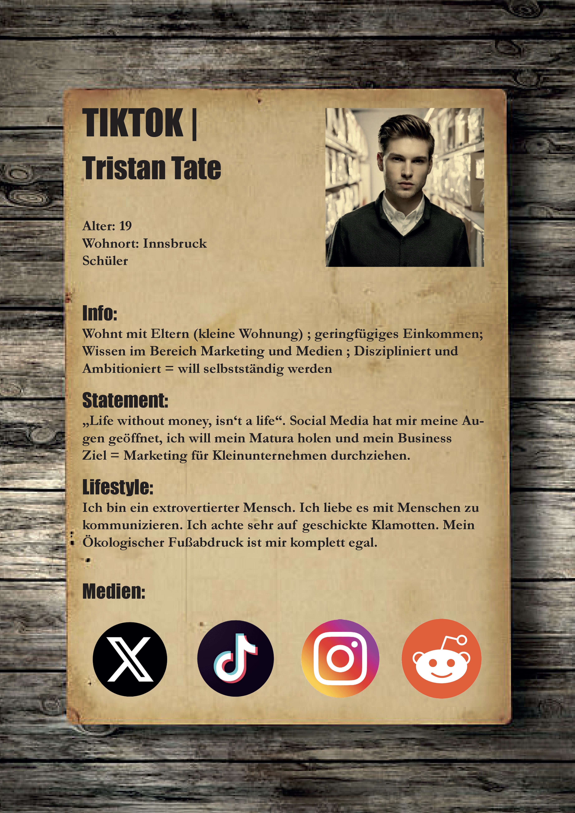

Zielgruppenanalyse und Erstellung von zwei detaillierten Personas im 2er-Team — gestaltet als InDesign-Steckbriefe mit KI-generierten Fotos.
Im Rahmen des Unterrichts in KOEA (Kommunikation & Öffentlichkeitsarbeit) erhielten wir den Auftrag, im 2er-Team zwei Personas für die Plattform TikTok zu entwickeln. Ziel war es, eine konkrete Zielgruppe zu definieren und diese in Form von detaillierten Steckbriefen darzustellen — je eine weibliche und eine männliche Persona.
Die fertigen Steckbriefe wurden in Adobe InDesign gestaltet. Die Fotos der Personas wurden mithilfe von Adobe Firefly (KI-Bildgenerator) erstellt. Beide Steckbriefe sollten ein einheitliches "Look & Feel" haben und nach den gelernten Designprinzipien gestaltet sein.

Wir haben zwei Personas entwickelt, die typische TikTok-Nutzer repräsentieren: eine junge Schülerin mit Interesse an Finanzen und Mathematik, sowie einen ambitionierten Schüler mit Fokus auf Marketing und Selbstständigkeit.
Die Steckbriefe wurden in Adobe InDesign mit einheitlichem Design gestaltet. Die Personenfotos wurden mit Adobe Firefly (KI von Adobe) generiert. KI wurde ausschließlich für die Bildgenerierung eingesetzt — Konzept, Text und Layout entstanden eigenständig im Team.

